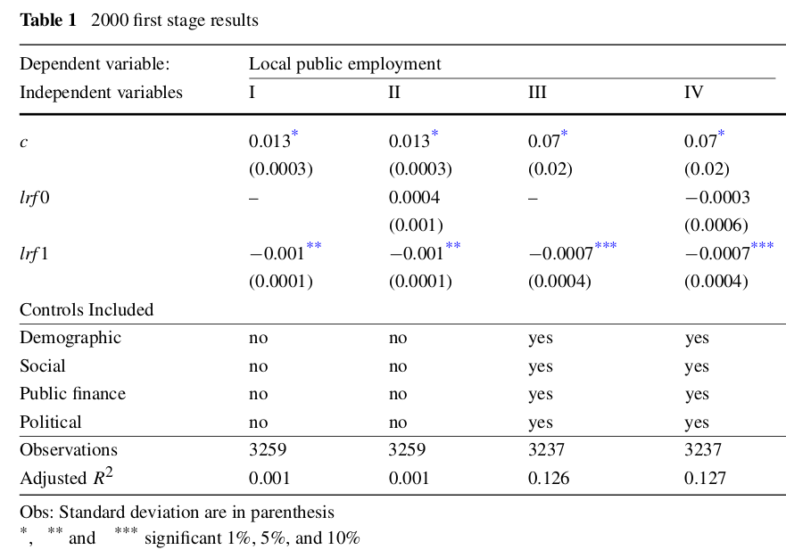

Econometria III
Questões - Causalidade e Variáveis Instrumentais
Causalidade
Questão 1
Assinale Verdadeiro ou Falso, com relação a Causalidade. Justifique as falsas:
(\(\phantom{X}\)) A estrutura de resultados potenciais é uma estrutura estatística usada para estudar o efeito causal de uma intervenção.
(\(\phantom{X}\)) O problema fundamental da inferência causal é que só podemos observar um resultado potencial para cada unidade.
(\(\phantom{X}\)) O resultado contrafactual refere-se ao que teria acontecido a um indivíduo na ausência de uma intervenção.
(\(\phantom{X}\)) Um experimento aleatorizado (RCT) é um tipo de estudo observacional que pode ajudar a estabelecer a causalidade.
(\(\phantom{X}\)) O efeito do tratamento para uma unidade de observação é a diferença entre os resultados potenciais nas condições de tratamento e controle.
(\(\phantom{X}\)) Uma variável de confusão é uma variável que está relacionada tanto à atribuição do tratamento quanto aos resultados potenciais.
(\(\phantom{X}\)) DAGs são uma ferramenta gráfica usada para representar as relações causais entre variáveis em um sistema.
(\(\phantom{X}\)) Em um DAG, as setas entre as variáveis representam relacionamentos causais, onde o início da seta indica a causa e a ponta da seta indica o efeito.
(\(\phantom{X}\)) Um caminho backdoor em um DAG é um caminho que conecta a exposição (tratamento) ao resultado por meio de variáveis que não fazem parte do caminho causal.
(\(\phantom{X}\)) Um colisor em um DAG é uma variável causada por duas ou mais outras variáveis em um caminho entre tratamento e resultado, e pode induzir associações espúrias entre essas variáveis.
(\(\phantom{X}\)) Em um DAG, as setas entre as variáveis representam correlação em vez de causalidade.
(\(\phantom{X}\)) DAGs podem ser usados para provar causalidade entre variáveis.
Questão 2
Considere o seguinte DAG e responda aos itens abaixo:
Considerando que deseja-se estimar o efeito causal de X em Y, então descreva quem são as variáveis de confusão, os mecanismos e os colisores.
Se desejamos o efeito total de X em Y, então devemos controlar para W somente. Explique porque.
Explique por que a variável Z não pode ser utilizada como instrumento de X para recuperar o efeito causal de X em Y.
Variáveis Instrumentais
Questão 1
Assinale Verdadeiro ou Falso, com relação a Variáveis Instrumentais. Justifique as falsas:
(\(\phantom{X}\)) Considere o modelo \(y = \alpha + \beta x + u\), onde \(x\) é uma covariável endógena. Se \(z\) é um instrumento válido para \(x\), deve ser que \(z\) influencie \(x\) e que também influencie \(y\), independentemente de \(x\).
(\(\phantom{X}\)) Para calcular os erros padrão corretos para os coeficientes estimados através do MQ2E é altamente recomendado o uso das rotinas de estimativa do MQ2E disponíveis em pacotes estatísticos ao invés de produzir essas estimativas manualmente.
(\(\phantom{X}\)) Quando todas as suposições de identificação são válidas, podemos confiar que o estimador de variáveis instrumentais (VI) será consistente.
(\(\phantom{X}\)) Considere o modelo \(y = \alpha + \beta x + u\), onde \(x\) é uma covariável endógena e \(z\) é um candidato a instrumento para \(x\). Se houver correlação entre \(z\) e \(u\), mas for menor que a correlação entre \(x\) e \(u\), será sempre melhor usar a estimativa VI do que a estimativa OLS, porque VI deve ter menor viés.
(\(\phantom{X}\)) Instrumentos fracos podem inflar os erros padrão produzidos por VI, mas não induzem viés de amostra finita.
(\(\phantom{X}\)) A regra de bolso para verificar se há instrumentos fracos é a seguinte: para o caso de um único regressor endógeno, a estatística F de primeiro estágio deve ser significativa para indicar um instrumento forte.
(\(\phantom{X}\)) A distinção entre variáveis endógenas e exógenas depende da distribuição das variáveis: quando são normalmente distribuídas, são exógenas, caso contrário são endógenas.
(\(\phantom{X}\)) O estimador MQ2E é consistente e tem uma distribuição normal em grandes amostras.
(\(\phantom{X}\)) Instrumentos fracos são um problema porque fazem com que os instrumentos não sejam exógenos.
Questão 2
No artigo de Mattos e França (2011), os autores examinam a relação entre emprego público e redistribuição de renda nos municípios brasileiros. Eles utilizam os requisitos estabelecidos pela Lei de Responsabilidade Fiscal como instrumento para a variação do emprego público entre os municípios.
A LRF estabelece limites máximos para dois grandes itens do orçamento público, um deles sendo as despesas com folha de pagamento, que não devem ultrapassar 60% da receita corrente líquida (RCL) do município. A LRF é uma variável dummy que equivale a um para governos cujo gasto com folha de pagamento ultrapassou 60% da RCL em pelo menos um ano entre 1997 e 1999 e estava dentro dos limites impostos pela LRF em 2000. Essa variável é igual a zero para todos os demais municípios.
Este artigo propõe investigar o efeito do emprego público na distribuição de renda nos municípios brasileiros. A variável dependente é a desigualdade de renda (incineq), enquanto que as variáveis independentes são emprego público (publicemp) e outros controles. A dummy lrf1 servirá de instrumento para o emprego público.
\[\text{incineq}_i=\eta + \delta \text{publicemp}_i + \lambda\text{controls}_i + \varepsilon_i\]
Por que o emprego público pode estar correlacionado com o termo de erro \(\varepsilon\)? Qual o problema resultante? (1,0 ponto)
Você acha que a LRF é um bom instrumento para o nível de emprego público local? Cite os dois critérios que uma variável instrumental deve atender e defenda ou critique a LRF com base nestes critérios. (1,5 pontos)
Os resultados do primeiro estágio são apresentados abaixo:

- Com base nestes resultados, você imagina que LRF é um bom instrumento para publicemp? O que você faria de diferente nesta estimação de primeiro estágio? (1,5 pontos)
Questão 3
Considere um modelo para a saúde de um indivíduo:
\[saude=\beta_0+\beta_1 idade+\beta_2 peso+\beta_3 altura+\beta_4 masculino+\beta_5 trabalho+\beta_6 exercicio+u_1\]
onde saude é alguma medida quantitativa da saúde da pessoa; idade, peso, altura e masculino são autoexplicativos; trabalho é horas semanais trabalhadas; e exercicio são as horas de exercício por semana.
Por que você poderia se preocupar com o fato de o exercício estar correlacionado com o termo de erro \(u_1\)? Que problema esta correlação provocaria no seu estimador de MQO?
Suponha que você possa coletar dados sobre duas variáveis adicionais,
distcasaedistrab, as distâncias de casa e do trabalho até a academia mais próxima. Discuta se estas variáveis seriam bons instrumentos paraexercicio. Quais as condições que elas devem atender? Explique em detalhes.Agora suponha que
distcasaedistrabnão estejam de fato correlacionados com \(u_1\), assim como todas as variáveis na equação acima, com exceção deexercicio. Escreva a forma reduzida paraexercicio.Como as hipóteses de identificação na parte b) pode ser testada?
Questão 4
Considere um modelo de estimação através de regressão de variáveis instrumentais
\[y_i=\beta_0+\beta_1 x_i+\beta_2w_i+u_i\] onde temos uma amostra independente das variáveis aleatórias Y, X, W e Z. Suponha que X é um regressor endógeno, equanto W é exógeno. Z é um instrumento válido para X.
Escolha a alternativa correta para cada uma das questões abaixo.
3.1) A regra de bolso para verificar se há instrumentos fracos é a seguinte: para o caso de um único regressor endógeno,
- um primeiro estágio F deve ser estatisticamente significativo para indicar um instrumento forte.
- um primeiro estágio F > 1,96 indica que os instrumentos são fracos.
- a estatística t em cada um dos instrumentos deve exceder pelo menos 1,64.
- um primeiro estágio F < 10 indica que os instrumentos são fracos.
- tudo o que precede
3.2) A distinção entre variáveis endógenas e exógenas é
- que as variáveis exógenas são determinadas dentro do modelo e as variáveis endógenas são determinadas fora do modelo
- dependente do tamanho da amostra: para n > 100, as variáveis endógenas tornam-se exógenas
- depende da distribuição das variáveis: quando são normalmente distribuídas, são exógenas, caso contrário são endógenas
- se as variáveis estão ou não correlacionadas com o termo de erro \(u\)
- tudo o que precede
3.3) Quando observadas todas as suas hipóteses, o estimador MQ2E é:
- consistente e tem uma distribuição normal em grandes amostras.
- imparcial
- eficiente em pequenas amostras
- F-distribuído.
- tudo o que precede
3.4) Instrumentos fracos são um problema porque:
- o estimador MQ2E pode não ser normalmente distribuído, mesmo em grandes amostras.
- fazem com que os instrumentos não sejam exógenos.
- o estimador MQ2E não pode ser calculado.
- você não pode mais prever as variáveis endógenas no primeiro estágio.
- tudo o que precede
3.6) Sejam \(W\) as variáveis exógenas incluídas em uma função de regressão que também tem regressores endógenos \(X\). As variáveis \(W\) podem:
- ser variáveis de controle
- tem a propriedade \(E(u_i|W_i) = 0\)
- fazer um instrumento exógeno para a sua regressão
- não ser incluídas na regressão de primeiro estágio
- tudo o que precede
3.7) A lógica das variáveis de controle em regressões de VI:
- é similar a lógica das variáveis de controle no MQO
- só se aplica no caso de erros homocedásticos no primeiro estágio do MQ2E
- é substancialmente diferente da lógica das variáveis de controle no MQO, uma vez que existem duas etapas na estimativa
- implica que o MQ2E é eficiente
- tudo o que precede
3.8) Para que \(W\) seja uma variável de controle efetiva na estimativa de VI, onde \(Z\) é o instrumento, a seguinte condição deve valer
- \(E(u_i) = 0\)
- \(E(u_i|Z_i, W_i) = E(u_i|W_i)\)
- \(E(u_iu_j) \neq 0\)
- deve haver um intercepto na regressão
- tudo o que precede
3.9) O estimador VI pode ser usado para eliminar potencialmente o viés resultante de
- multicolinearidade
- correlação serial
- erros de medida nas variáveis
- heterocedasticidade
- tudo o que precede
3.10) A regressão de variáveis instrumentais usa instrumentos para:
- estabelecer o Efeito Mozart
- para aumentar o R2 da regressão
- para eliminar a correlação serial
- isolar movimentos em \(X\) que não estão correlacionados com \(u\)
- tudo o que precede
Questão 5
Uma das consequências de uma crise econômica é que muitas famílias possam ter dificuldades para pagar suas hipotecas. Como resultado, muitas delas podem ser despejadas de suas casas sem ter uma alternativa segura de moradia, com todas as consequências negativas que isso pode levar. Como formulador de políticas, você decide implementar um programa que oferece mediação legal e de execução hipotecária como apoio a famílias com problemas para pagarem as suas hipotecas e tentar evitar que percam suas casas. No entanto, antes de expandir o programa para todo o país, primeiro você deseja verificar que o programa é eficaz para ajudar as pessoas a manter suas casas. Para fazer isso, você monta um experimento no qual, entre 1.000 famílias elegíveis, você aleatoriamente designa 500 delas para participar deste novo programa, deixando as 500 restantes com o apoio habitual dos serviços sociais (portanto, sem acesso a mediação de encerramento). Suponha que você tenha as seguintes informações para todas as 1.000 famílias elegíveis antes de o programa ser implementado:
\(Assign_i\): se a família foi designada para o programa de mediação (\(Assign_i= 1\)) ou grupo controle (\(Assign_i = 0\))
\(Famsize_i\): número de membros da família
\(Kids_i\): se há crianças na casa (\(Kids_i= 1\)) ou não (\(Kids_i= 0\))
\(Empl_i\): se há alguém empregado no domicílio (\(Empl_i= 1\)) ou não (\(Empl_i= 0\))
\(Price_i\): o valor de mercado da casa
\(Debt_i\): a dívida hipotecária pendente
E as seguintes informações referentes a um ano após a implantação do programa:
\(Particip_i\): se a família realmente participou do programa de mediação (\(Particip_i = 1\)) ou não (\(Particip_i= 0\))
\(Home_i\): número de meses que a família conseguiu manter sua casa.
- Usando as informações a disposição antes do início do programa, como você testaria se a aleatorização foi bem sucedida? Isto é, como você testaria que \(Assign_i\) é independente das características observáveis? Descreva a regressão usada (se alguma), as hipóteses de teste e a estatística a ser utilizada.
Se a aleatorização funcionou e todas as famílias designadas ao tratamento efetivamente participaram do programa de mediação, então em uma regressão da variável de interesse (\(Home_i\)) na designação de tratamento (\(Assign_i\)), esta designação de tratamento será exógena e, portanto, seu coeficiente pode ser interpretado causalmente.
Como você testaria se o novo programa de mediação foi eficaz em ajudar as famílias a manter suas casas por mais tempo? Escreva o modelo de regressão, o teste de hipótese e a estatística que você usaria para a inferência.
Suponha agora que a atribuição inicial das famílias ao programa tenha sido de fato aleatória. Após serem convidadas a participar do novo programa de mediação, 20% das famílias do grupo tratamento decidiram não participar1. Isso significa que o tratamento efetivo para 20% das famílias do grupo do programa (\(Assign_i= 1\)) foi zero (\(Particip_i= 0\)). Explique por que, nessas circunstâncias, regredir apenas o número de meses que uma família manteve sua casa (\(Home_i\)) no tratamento real da família (\(Particip_i\)) pode não levar a uma estimativa consistente do efeito causal do programa no tempo em que uma família a mantém em casa.
- Tendo em vista os dados de que dispõe, proponha uma estratégia de estimativa alternativa que, nas circunstâncias descritas na questão c), permita obter o efeito causal do programa (\(Particip_i\)) no tempo que uma família mantém a sua casa (\(Home_i\)). Explique porque esta estratégia seria não-viesada.
Questão 5
Suponha que temos um modelo \(y=\beta_0 + \beta_1 x + u\), onde \(E\left[x_i u_i\right]\neq 0\). Você obtém uma variável \(Z\) tal que \(E\left[z_i u_i\right] = 0\).
Utilize a expressão \(Cov(z_i, u_i) = 0\) para deduzir a forma do parâmetro \(\beta_1\) nesse modelo.
Na letra (a), uma das hipóteses necessárias é “há correlação entre as variáveis X e Z”. Como isso aparece na forma estimada acima? Explique, intuitivamente, o sentido econômico dessa hipótese. Procure usar exemplos de um problema real.
Utilizando os análogos amostrais de (a), proponha um estimador para o parâmetro populacional. Chame esse estimador de \(\hat\beta_{1,IV}\).
Outra forma de calcular \(\hat\beta_{1,IV}\) é via MQ2E. Explique quais são os dois estágios da regressão.
Assuma agora que \(y = X\beta + u\), onde \(E\left[X' u\right] \neq 0\) e \(X\) tenha dimensão \(k > 1\). Você obtém um conjunto de \(g \leq k\) variáveis \(Z\) tal que \(E\left[Z'u\right] = 0\). Perceba que X pode conter, por exemplo, apenas uma variável tal que \(E\left[x_k u\right] \neq 0\) (endógena), o que já tornaria o modelo inválido. Dê uma intuição para o motivo do número de variáveis instrumentais ser necessariamente maior ou igual ao número de variáveis explicativas em \(X\) que são correlacionadas com o termo de erro. O que acontece quando o número de variáveis instrumentais é estritamente maior que o número de variáveis endógenas?
Questão 6
Um dos problemas mais simples de variáveis instrumentais é o caso onde \(y_i=\alpha+\beta x_i+u_i\) , \(E\left[x_i u_i\right] \neq 0\), e você obtém um instrumento binário (dummy) \(z_i\), com \(E\left[z_i u_i\right] = 0\)
Mostre que o estimador de IV pode ser escrito como \[ b_{Wald}=\frac{\bar{y}_1 - \bar{y}_0}{\bar{x}_1 - \bar{x}_0} \] Onde \(\bar{y}_0\) e \(\bar{x}_0\) são as médias amostrais de \(x_i\) e \(y_i\) considerando apenas a parte da amostra com \(z_i = 0\), e que \(\bar{y}_1\) e \(\bar{x}_1\) são as médias amostrais considerando apenas a amostra com \(z_i = 1\). Esse estimador, conhecido como estimador de Wald, foi proposto pelo próprio em 1940.
Pense no caso onde \(x_i\) é uma variável dummy indicando um tratamento (por exemplo, \(x_i = 1\) se o indivı́duo aplicou para um programa de retreinamento fornecido pelo governo). Interprete intuitivamente o estimador acima, lembrando que a média de uma variável dummy é a proporção de observações cujo valor de \(x_i\) é igual à 1. Para ajudar na resposta, note que o estimador da letra (a) requer que \(\bar{x}_1 - \bar{x}_0 \neq 0\).
Questão 7
Suponha que você está interessado em estimar \[y_i = \alpha + \beta x_i + u_i\] onde \(x_i\) é um escalar e \(E\left[x_i u_i\right] \neq 0\). Você observa uma variável aleatória \(z_i\), relevante no sentido de que \(E\left[z_i x_i\right] \neq 0\), mas não não tem certeza se ela é válida como instrumento, ou seja, não é garantindo que \(E\left[z_i u_i\right] = 0\). Você decide estimar o modelo por OLS e IV, usando os estimadores
\[b_{MQO}=\frac{\sum(x_i-\bar x)(y_i-\bar y)}{\sum (x_i-\bar x)^2} \text{ e } b_{VI}=\frac{\sum(z_i-\bar z)(y_i-\bar y)}{\sum (z_i-\bar z)(x_i-\bar x)}\] Nesse exercício, queremos deduzir condições para as quais o estimador de MQO é uma opção melhor que o estimador de VI.
- Mostre que o viés assintótico do MQO é igual à
\[plim(b_{MQO}) − \beta = \text{corr}(x_i, u_i)\frac{\sigma_u}{\sigma_x}\]
- Mostre que o viés assintótico do IV é igual à
\[plim(b_{VI}) − \beta = \frac{\text{corr}(z_i, u_i)}{\text{corr}(z_i, x_i)}\frac{\sigma_u}{\sigma_x}\]
Use os resultados acima para deduzir quando o estimador de MQO é preferı́ve ao de VI, em termos de viés.
Você sabe o que são “instrumentos fracos”. Relacione a discussão sobre instrumentos fracos, isso é, um instrumento tal que \(E\left[x_i z_i\right]\) tem um valor baixo, com o resultado da letra (c).
Questão 8
Neste problema você deve estabelecer a equivalência algébrica entre MQ2E, a razão entre estimativas MQO em forma reduzida e o estimador de VI. Considere um modelo com uma única (suspeito) variável endógena (variáveis já em desvio):
\[\begin{align} y_1&=\alpha_1 y_2 + u_1\\ y_1&=\pi_1 z + v_1\\ y_2&=\pi_2 z + v_2 \end{align}\]
Para maior clareza de notação, usamos \(y_2\) como a variável endógena suspeita e \(z\) como a variável exógena que serve como instrumento para \(y_2\). A segunda e terceira equações são a forma reduzida para \(y_1\) e \(y_2\), respectivamente.
Sabemos que um estimador de \(\alpha_1\) é o estimador MQ2E usando o instrumento z. Considere um estimador alternativo de \(\alpha_1\): i) estimar a forma reduzida de \(y_1\) e \(y_2\) por MQO; ii) \(\hat\alpha_1^{alt}=\hat\pi_1/\hat\pi_2\)
Mostre a equivalência numérica entre \(\hat\alpha_1^{2E}\) e \(\hat\alpha_1^{alt}\)
Mostre a equivalência numérica entre \(\hat\alpha_1^{VI}\) e \(\hat\alpha_1^{alt}\)
Questão 9
O objetivo deste exercı́cio é comparar as estimativas e erros padrão corretamente obtidos usando MQ2E com aqueles obtidos usando procedimentos inadequados. Use a base WAGE2.dta para esse exercı́cio.
- Estime a equação abaixo usando MQ2E \[\log(wage) = \beta_0 + \beta_1 educ + \beta_2 exper + \beta_3 tenure + \beta_4 black + u,\]
onde sibs é uma variável instrumental para educ. Reporte os resultados.
Agora, execute manualmente o MQ2E. Ou seja, primeiro faça a regressão de \(educ_i\) em \(sibs_i\), \(exper_i\), \(tenure_i\) e \(black_i\) e obtenha os valores ajustados, \(\widehat{educ}_i\) \(i = 1, \ldots , n\). Em seguida, execute a regressão de segundo estágio \(\log(wage_i)\) em \(\widehat{educ}_i\), \(exper_i\), \(tenure_i\) e \(black_i\). Verifique se os \(\beta_j\) são idênticos aos obtidos no item a) e os erros padrão são um pouco diferentes. Os erros padrão obtidos da regressão do segundo estágio ao realizar manualmente MQ2E são inadequados.
Agora, use o seguinte procedimento de duas etapas, que geralmente produz estimativas inconsistentes de \(\beta_j\), e não apenas erros padrão incorretos. Na etapa um, regresse \(educ_i\) em \(sibs_i\) apenas e obtenha os valores ajustados, digamos \(\widetilde{educ}_i\). (Observe que esta é uma regressão de primeiro estágio incorreta). Em seguida, na segunda etapa, execute a regressão de \(\log(wage)\) em \(\widetilde{educ}_i\), \(exper_i\) , \(tenure_i\) e \(black_i\). Como a estimativa desse procedimento incorreto de duas etapas se compara à estimativa correta de MQ2E do retorno à educação?
Referências
Mattos, Enlinson, e Vitor França. 2011. “Public employment and income redistribution: causal evidence for Brazilian municipalities”. Public Choice 146 (1/2): 43–73. http://www.jstor.org/stable/41483617.
Notas de rodapé
Este problema é conhecido como atrito (do inglês attrition), quando nem todos os indíduos designados ao tratamento efetivamente o recebem.↩︎